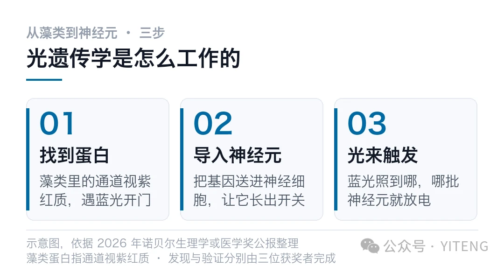
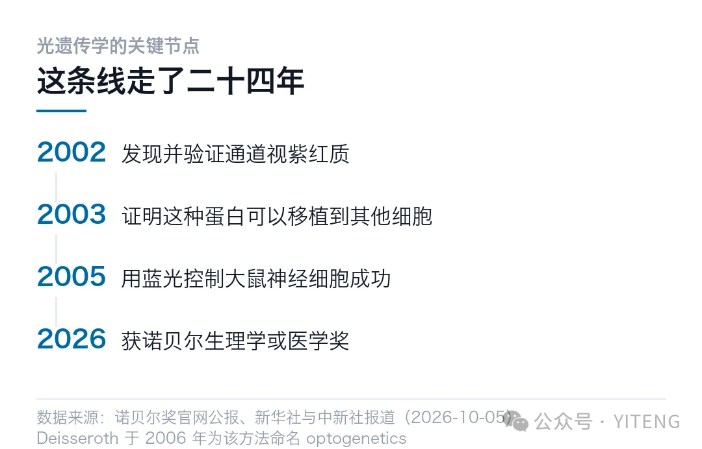

10 月 5 日，斯德哥尔摩打出了三个电话。
一个打给斯坦福的 Karl Deisseroth，他写论文写到深夜，刚躺下。一个打给柏林洪堡大学的 Peter Hegemann。第三个打给 Georg Nagel，他人在意大利，坐在能看见橄榄树的露台上。
2026 年诺贝尔生理学或医学奖，颁给了这三个人，表彰他们发现光门控离子通道、创立光遗传学。1200 万瑞典克朗的奖金，三个人平分。
核心要点
获奖者：Karl Deisseroth、Peter Hegemann、Georg Nagel
关键发现：一种藻类蛋白，放进什么细胞，什么细胞就能感光
意义：能用光单独打开或关掉活体大脑里的某一个神经元
奖金：1200 万瑞典克朗，约合 801 万元人民币
说真的，第一眼看这条新闻，会觉得它离日常很远。往脑子里装一个光的开关，跟普通人有什么关系？
往下看，这个想法会变。
01那束光是从藻类身上借来的
单细胞藻类要往有光的地方游。它没有眼睛，靠的是细胞膜上的一种蛋白，叫通道视紫红质。
这种蛋白有个脾气。蓝光一照，它中间的离子通道像门一样打开，带电离子涌进细胞，产生一个电信号。
Hegemann 和 Nagel 在 2002 年、2003 年先后把这个机制讲清楚。更关键的一步在后面，他们发现这蛋白不挑宿主，放进什么细胞，什么细胞就学会了感光。
这就有点狠了。
你想想看，神经元本来靠化学和电信号传递信息。现在给它装一个随光开合的开关，相当于给这台机器接了一根外部控制线。
其实吧，这个想法不新。1979 年时，DNA 双螺旋的发现者之一 Francis Crick 就写过，神经科学迟早需要一种能用光控制特定细胞的方法。二十多年后，工具才凑齐。

光遗传学的三步，从藻类蛋白到神经元开关
02三个人各干了什么
三个人的分工，诺奖公报写得很清楚。
Hegemann 和 Nagel 负责找。他们从单细胞藻类里挖出通道视紫红质，验证了它遇光开门的特性，并且证明了这种感光能力可以搬到别的细胞上。
论文分别发在 2002 年的《科学》和 2003 年的《美国国家科学院院刊》上。
optogenetics 这个词，是 Deisseroth 在 2006 年提出的。它把两个学科缝在一起，光学和遗传学。

从 2002 到 2026，这条线走了二十四年
Deisseroth 负责用。他把编码这种蛋白的基因导进大鼠的神经细胞，蓝光一照，神经信号真的被触发了。
两年后，他在活体小鼠的大脑里做成了同一件事。
从这一刻起，神经科学多出一种实验手段。以前要研究某个脑区管什么，只能靠电极刺激、靠药物、靠损伤，都是粗活。
现在可以只点亮指定的一小撮细胞，看动物接下来做什么。
精确到单个神经细胞，用光打开它，或者关掉它。
03为什么这个奖等了二十一年
2005 年到 2026 年，21 年。这在生理学或医学奖里不算慢。
快有快的道理。光遗传学不只是多了一件工具，它把实验里的因果这件事变得可做了。
以前测脑活动，只能看相关性。某个区域亮了，同时动物在害怕，谁先谁后说不清。
现在反过来，研究者直接让那批细胞放电，看动物会不会怕。
实验设计从观察换成了干预。这是质的变化。
打个问号的地方也有。光要进脑，得先埋一根光纤。这套操作是侵入性的，能做动物实验，短期内做不了常规的人体治疗。
有意思的地方在于，这个奖叫生理学或医学奖，但受表彰的东西里，一半是物理和工程。
藻类的视蛋白是生物学，光纤和激光是工程，把两者接起来的病毒载体又属分子生物学。跨学科这件事，在这一个奖上体现得很直白。
它还有个附带的结果。用光控制生命这件事，从此从科幻里被拎了出来，变成一套可复制的实验操作。今天做这套实验，门槛已经低到普通实验室都能复现。
04它现在被拿去做什么
诺奖评委、瑞典卡罗琳医学院教授潘嫱接受采访时提到，这项技术已经在试临床应用。
走得最近的一条是视网膜疾病。视网膜上的感光细胞坏了，但下游的神经节细胞往往还在。
把通道视紫红质导进去，用光刺激，已经有患者恢复了一部分视觉功能。
抑郁症、阿尔茨海默病、慢性疼痛，也都在用它做机制研究。
注意一点，这几条还停在研究阶段，离成药很远。看到治疗两个字就往药上想，会失望。
现在做这类实验，流程已经标准化了。把通道视紫红质的基因装进病毒载体，注射到目标脑区，等细胞表达出来，再埋一根光纤。动物清醒、自由活动，光一照，指定的那批细胞就放电。
小鼠、大鼠、斑马鱼、果蝇身上都在跑。凡是能转基因的动物，基本都能用这套方法。
05落到我关心的地方
老实说，短期内它跟普通人的生活没什么直接关系。
但这条线值得留意。它展示了一件事，基础研究积累到某个点，会突然给整个领域换一套工具。
换工具比换结论重要。工具一换，一批原来做不了的实验，突然就能做了。
回到开头那个问题。往脑子里装开关，不是为了控制谁，是为了看清这台机器到底怎么转。
二十年前往藻类身上多看一眼，今天换来一把打开大脑的钥匙。
本文以诺奖官网公报、新华社与中新社报道为准。临床应用部分为研究人员公开表述的方向，仍在研究阶段，不构成任何医疗建议。
本文信息来源
本文信息来源
- NobelPrize.org — The Nobel Prize in Physiology or Medicine 2026（2026-10-05） · nobelprize.org
- 新华社 — 三名科学家获 2026 年诺贝尔生理学或医学奖（2026-10-05） · app.xinhuanet.com
- 中国新闻网 — 三名科学家因光遗传学发现获 2026 年诺贝尔生理学或医学奖（2026-10-05） · chinanews.com.cn
- Nature — Medicine Nobel awarded for brain 'switch' that controls neurons with light（2026-10-05） · nature.com
- Science — Nagel, G. et al. Channelrhodopsin-1: a light-gated proton channel in green algae（2002） · science.org
- Nature Neuroscience — Boyden, E. S. et al. Millisecond-timescale, genetically targeted optical control of neural activity（2005） · nature.com
本文首发于公众号「YITENG」。原文：mp.weixin.qq.com/s/EE6hMC5bE_A-Vb4TjNiNOg
留言